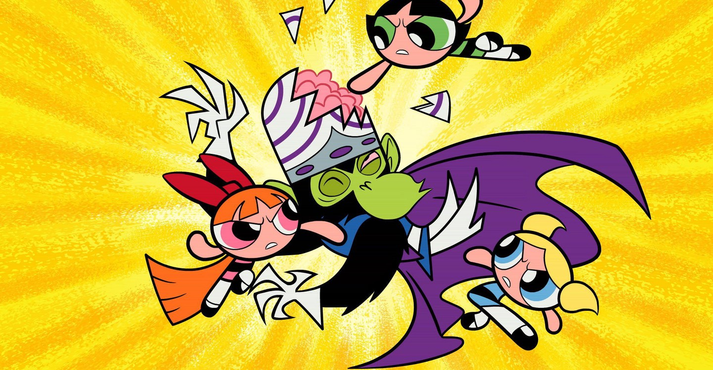

About The Powerpuff Girls
"The Powerpuff Girls is an American superhero animated television series created by animator Craig McCracken and produced by Hanna-Barbera (later Cartoon Network Studios) for Cartoon Network. The show centers on Blossom, Bubbles, and Buttercup, three kindergarten-aged girls with superpowers." - The Powerpuff Girls Wikipedia Page
The Powerpuff Girls and their main nemesis, Mojo Jojo
5 Fun Powerpuff Girls Facts
(from MentalFloss)
- They were originally known as ‘The Whoop-Ass Girls.’
- The girls' eyes were inspired by Margaret Keane's work.
- Buttercup's name was initially Bud.
- They had different names in different countries.
- Executives - and young boys - weren't entirely sold on the show (at first).
The Powerpuff Girls' Friends and Bad Guys
Click a name below to visit the Fandom wiki page of any character.